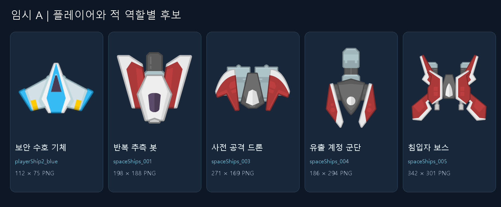
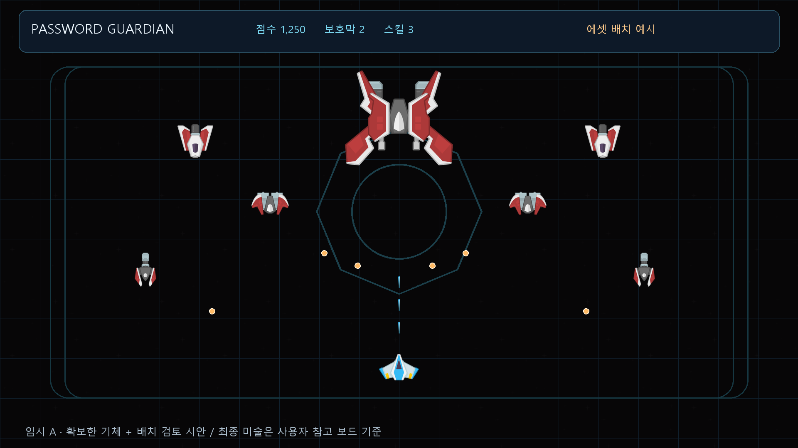
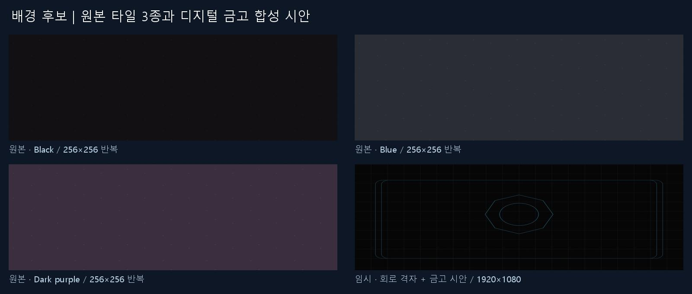

PASSWORD GUARDIAN / ASSET REVIEW
에셋 후보와 임시 구현 조합
최종 미술 참고 방향
사용자 첨부 보드의 금속 질감·청록 조명·디지털 금고를 기준으로 합니다. 플레이어는 청록, 적은 주황·보라, 보스는 붉은 코어로 구분합니다. 아래 확보한 Kenney 조합은 기능 검증용 임시 소재이며, 보드 화풍의 완성 에셋은 아직 미확보입니다.
시각 제작 기준2026-10-12 · 5개 팩 다운로드 및 동봉 CC0 라이선스 확인. 임시 A는 Space Shooter 계열입니다. 아래 합성 이미지는 에셋 배치 검토용이며 실제 게임 화면이 아닙니다.
임시 A · 역할별 기체

임시 A · 화면 적용 시안

기체·배경 타일은 확보한 Kenney 원본, 회로 격자·금고 도형·HUD·원형 적 탄환은 비교용 코드 합성입니다. 보안 문양과 최종 화면은 후속 편집 대상입니다.
배경 비교

확보한 팩
모든 미리보기는 로컬에서 열립니다. 공식 출처 링크만 인터넷 연결이 필요합니다.